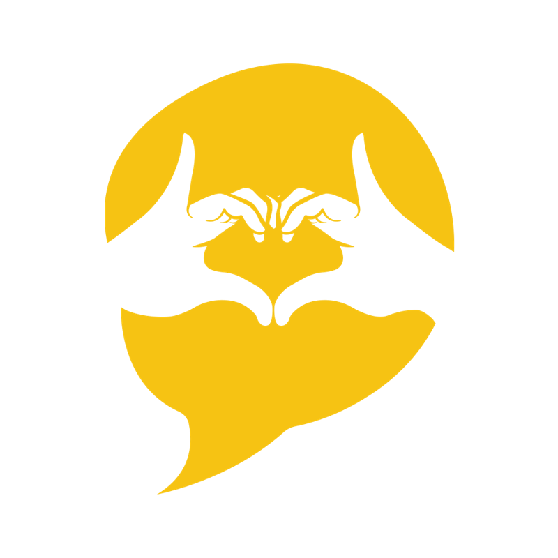
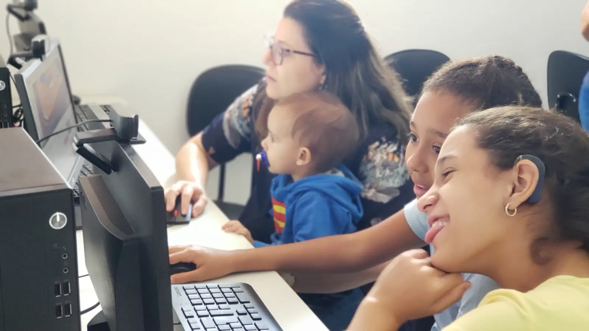
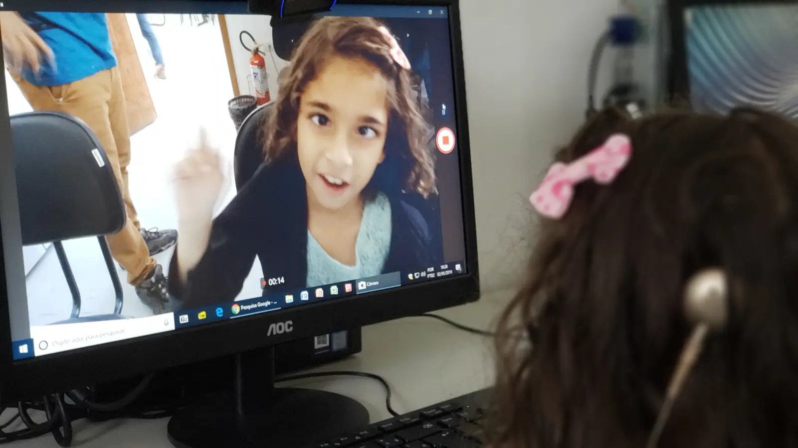

01 · Essência
Quem a marca é
Uma Organização da Sociedade Civil que fomenta a interação entre surdos e ouvintes por meio de uma comunicação bilíngue: LIBRAS e Português. Em São José dos Campos desde 1989.
Lema
Uma ponte entre surdos e ouvintes, para impactar comunicação.
Convite
Venha ser AADAS você também!
Apaixonar-se é bem diferente de compadecer-se. A marca convida, nunca pede pena.
Os cinco verbos: as letras de AADAS
A sigla vira um chamado. É a navegação principal do site e pode organizar campanhas e redes.
Acolhedora
Fala como quem recebe em casa. Os atendidos se veem no site, nas fotos reais deles.
Bilíngue
LIBRAS e Português têm o mesmo peso. Conteúdo importante tem versão em LIBRAS.
Afirmativa
"Juntos conseguiremos", não "sozinhos não conseguiremos". Fala de habilidade, não de limitação.
Transparente
Presta contas com clareza. Mostra números, documentos e de onde vem cada recurso.
02 · Logo
Assinatura e símbolo
O símbolo é um balão de fala amarelo com duas mãos que formam um coração: o sinal da AADAS. O balão é a comunicação; as mãos, a LIBRAS.

Faça
- Deixe ao redor do logo um respiro mínimo igual à altura da letra "A" de AADAS.
- Use a assinatura completa com no mínimo 120 px de largura no digital e 35 mm no impresso. Abaixo disso, só o símbolo.
- No topo do site, logo branco sobre o azul, com a faixa amarela de 6 px embaixo.
Não faça
- Trocar as cores, aplicar sombra, contorno ou degradê.
- Colocar o logo colorido sobre o amarelo (o símbolo some) ou sobre foto sem escurecer.
- Trocar as barras azuis por preto. A marca é azul e amarelo, decisão registrada na revisão do site.
- Recriar o sinal das mãos com outra foto ou gesto: confunde com o sinal da AADAS.
03 · Cores
Azul e amarelo, medidos no logo
As duas cores oficiais saíram do arquivo do logo, não de memória. Os tons de apoio só existem para dar contraste e estados.
--aadas-azul-900--aadas-amarelo-500Apoio
--aadas-azul-950--aadas-azul-700--aadas-azul-500--aadas-azul-100--aadas-amarelo-700--aadas-amarelo-300--aadas-amarelo-50--aadas-cinza-900--aadas-cinza-600--aadas-cinza-100Combinações aprovadas (WCAG AA)
| Texto sobre fundo | Contraste | Uso |
|---|---|---|
| Azul sobre branco | 16,4 : 1 | Títulos, botões contorno |
| Azul sobre amarelo | 9,9 : 1 | Botão principal, balão, selos de destaque |
| Amarelo sobre azul | 9,9 : 1 | Destaques no topo e rodapé |
| Azul-claro sobre azul | 10,3 : 1 | Texto corrido em fundo escuro |
| Cinza suave sobre branco | 5,9 : 1 | Legendas e textos de apoio |
| Amarelo sobre branco | 1,6 : 1 · proibido | Nunca para texto ou ícone. Use amarelo 700. |
Estados
04 · Tipografia
Letras feitas para ler fácil
Para muitos surdos, o Português é a segunda língua. Por isso as duas famílias foram escolhidas pela legibilidade: Lexend nasceu de pesquisa sobre fluência de leitura; Atkinson Hyperlegible, para diferenciar bem cada letra. As duas são gratuitas (Google Fonts).
Títulos · Lexend
Aa
Pesos 500, 600, 700 e 800. Arredondada e geométrica, conversa com o desenho do nome AADAS.
Texto · Atkinson Hyperlegible
Aa Il1 0O
Pesos 400 e 700. "I", "l" e "1" não se confundem. Corpo mínimo de 17 px no site.
display · 36–56Apaixone-seh1 · 30–42Transparênciah2 · 24–30Programa Socialh3 · 20Oficinas de LIBRAScorpo · 17Cerca de 130 pessoas convivem com a gente, entre elas 65 surdos de diferentes idades e suas famílias.pequeno · 15Texto de apoio, descrições de cartão.legenda · 13PDF · 2025 · atualizado em 21/10/202605 · Forma e espaço
O balão como forma-mãe
O balão do símbolo vira a forma dos blocos de destaque: três cantos redondos e um canto quase reto embaixo à esquerda, a "ponta" da fala. Use em destaques, verbos e janelas de LIBRAS. Cartões comuns ficam com o raio médio.
--raio-balao: 28 28 28 4--raio-m: 12pxEspaçamento (base 4)
Conteúdo com largura máxima de 1120 px e margem lateral de 16 px no celular. Seções separadas por 64 px.
06 · Componentes
Peças prontas
Todas as classes estão em components.css. Copie o HTML de cada exemplo.
Botões
Um botão principal (amarelo) por tela. Texto do botão diz a ação: "Inscreva-se", não "Clique aqui".
Frase de destaque em balão
Quando se sonha junto, é o começo da realidade.
Nossos sonhos só se realizam se mais pessoas vierem sonhar e realizar com a gente.
Doe-seCartão de programa

Oficinas de convivência
LIBRAS, fala, escrita e fortalecimento de vínculos para surdos e suas famílias.

Audição e fala
Do diagnóstico à adaptação do aparelho, com fonoaudiologia e psicologia.

Conhecer é conviver
Cerca de 7 eventos por ano para aproximar surdos e ouvintes.
"Você sabia…"
Você sabia…
que a Língua de Sinais não é universal? Surdos de países diferentes falam línguas diferentes, com sotaques regionais.
Depoimento
Texto do depoimento da família, transcrito do vídeo, em até três linhas.Nome, mãe de aluno do Programa Social
Números de impacto
Vídeo com janela de LIBRAS

Formulário
Lista de documentos (Transparência)
- Estatuto Social vigente
- Relatório de Atividades 2025tarjar antes de publicar
- Ata da assembleia de eleição 2026–2030falta
07 · Fotos
As pessoas da AADAS no centro
Fotos reais dos atendidos, famílias, alunos e equipe, para que eles se reconheçam no site e se sintam em casa. Banco de imagem só em último caso.

A sede, salas e oficinas: mostram que existe um espaço físico.
Surdos e ouvintes juntos, em ação, com expressão no rosto.
Eventos e festas: alegria, não pena.
Faça
- Quando a foto mostrar um sinal, use o sinal certo da palavra (Apaixone-se, Aprenda, Doe-se…) e confira com um surdo da equipe.
- Enquadre mãos e rosto inteiros: a expressão facial faz parte da LIBRAS.
- Tenha autorização de imagem, ainda mais de crianças.
Não faça
- Usar gesto qualquer (coração com as mãos, joinha posado) onde se espera um sinal de LIBRAS.
- Cortar as mãos de quem está sinalizando.
- Fotos tristes, de olhar para baixo, que pedem compaixão.
08 · Voz e escrita
Fale com, nunca sobre
Frases curtas e diretas, verbos no imperativo convidativo e "você". O próprio Drive registra: "simplificar" e "comunicação mais simples e direta".
| Em vez de | Escreva | Por quê |
|---|---|---|
| Surdo-mudo | Surdo / pessoa surda | Surdo não é mudo; o termo é rejeitado pela comunidade. |
| Libras / libra / linguagem de sinais | LIBRAS · Língua Brasileira de Sinais | É língua, com gramática própria. Grafia da casa: em maiúsculas. |
| Portador de deficiência | Pessoa com deficiência auditiva | Ninguém "porta" a deficiência. |
| Não será sozinhos que conseguiremos | Juntos conseguiremos | Afirmar, não negar (decisão da página Doe-se). |
| Ajude os coitados | Apaixone-se pela causa | Apaixonar, não compadecer. |
| Clique aqui | Inscreva-se como divulgador | O link diz o que acontece. |
| Planos de voluntário | Perfis: Divulgador, Atuante, Logística em eventos | Nomeação definida na reunião de ajustes. |
- DOAADAS
- Programa de doação mensal. Sempre em maiúsculas, com AADAS dentro.
- Doadores em Ação
- Doadores automáticos da Nota Fiscal Paulista.
- CODA
- Ouvinte filho de pais surdos (Children of Deaf Adults).
- Sinal próprio
- O "nome" de uma pessoa em LIBRAS, dado pelos surdos.
09 · Acessibilidade
Uma organização de surdos precisa dar o exemplo
Vídeo
Todo vídeo com legenda em português e janela de LIBRAS. Nada importante só por áudio.
Contraste
Mínimo 4,5 : 1 para texto, 3 : 1 para bordas de campos e ícones. Amarelo nunca é cor de texto sobre branco.
Foco
Anel amarelo de 3 px com contorno azul: aparece sobre qualquer fundo.
Toque
Alvos de no mínimo 44 px de altura. Formulários com rótulo visível, nunca só placeholder.
Movimento
Animações curtas e desligadas para quem pede menos movimento no sistema.
Texto alternativo
Fotos com descrição do que acontece. Se alguém sinaliza, diga o sinal: "Aluna faz o sinal de Aprenda".
10 · Como usar
Nas páginas do site
<link rel="stylesheet" href="/design-system/tokens.css">
<link rel="stylesheet" href="/design-system/components.css">
<a class="btn btn-primario" href="/apaixone-se">Quero me apaixonar</a>
<div class="balao"><p class="frase-destaque">…</p></div>Arquivos: tokens.css (variáveis), tokens.json (mesmos valores para Figma, Canva ou Tailwind), components.css (peças) e README.md (regras resumidas).